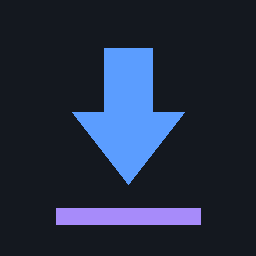

Sahte lisans uyarıları, çöken videolar ve torrent indiremeyen hantal yazılımlar...

Windows 10 & 11 için %100 taşınabilir, ultra hafif ve yüksek hızlı indirme motoru.
Tek sunucuya 16 eşzamanlı bağlantı açarak internet hattınızı sonuna kadar zorlar.
Büyük dosyaları küçük bloklara bölerek sunucu limitlerini aşar.
Kategori klasörleri (Video, Müzik, Program) otomatik atanır.
"Gece 01:00'de başla ve bitince bilgisayarı kapat" kuralları.
YouTube, Instagram ve TikTok videolarında ses ile görüntüyü sıfır kayıpla birleştirir.
YouTube 4K videoları görüntü ve ses olarak 2 ayrı parça halinde gönderir. AfuDM harici FFmpeg kurmanıza gerek bırakmadan kendi muxer'ı ile birleştirir.
İstediğiniz çözünürlükte video veya tek tıkla saf MP3 ses indirin.
Tek linkle bütün albümleri ve video listelerini tek seferde sıraya ekleyin.
Gömülü oynatıcılardan canlı video segmentlerini yakalayın.
IDM torrent indiremez. AfuDM hem Magnet hem .torrent dosyalarını son sürat indirir.
Eş (seed) bulamayan veya hızı düşen torrentler için AfuDM her gün otomatik olarak güncel global tracker listesini çeker ve torrenti yeniden anons eder.
Yerel Wi-Fi ağı üzerinden bilgisayarınızdaki tüm indirmeleri cebinizden kontrol edin.
Salonda otururken bilgisayardaki kuyruğu görün, duraklatın veya başlatın.
Bilgisayara inen film ve müzikleri kablo takmadan telefon hafızasına çekin.
"Chrome'a Ekle" deyin, eklenti otomatik kurulsun ve eşleşsin.
Eski araçları silin. Windows 10 & 11 için en temiz, taşınabilir ve hızlı indirme motoruna geçin.